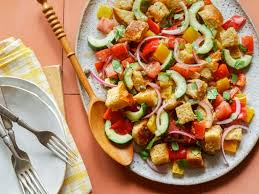
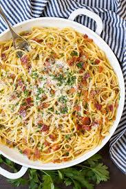
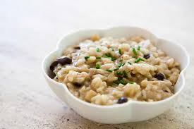

Menu
Caprese Salad with Pesto.............................................Rs 100

Nothing like a fresh tomato salad in summers! A great antipasto bite to start your meal with. This combination of juicy tomatoes and mozzarella cheese salad topped with freshly made pesto sauce is a distinct yet simple one. It offers a twist to the classic caprese salad.
Panzenella.............................................................Rs 100

Panzenella is a Tuscan bread salad, ideal for summer. It does not follow a particular recipe, but the two ingredients that do not change are tomatoes and bread. This salad is great with a chilled glass of Prosecco and lots of sunshine!
Bruschetta........................................................Rs 100

An antipasto dish, bruschetta has grilled bread topped with veggies, rubbed garlic and tomato mix. A country bread sliced and topped with different toppings - the evergreen tomato-basil and an inventive mushroom-garlic. The classic Italian starter!
Focaccia Bread.......................................................Rs 100

Fresh dough is topped with caramelized onions, olives, tomato slices, basil leaves, grated parmesan cheese and baked delicious!
Pasta Carbonara.......................................................Rs 100

This simple Roman pasta dish derives its name from 'carbone' meaning coal. It was a pasta popular with the coal miners. The original recipe calls for guanciale, which is pig's cheek, but since its not easily available, the chef has used bacon instead.
Margherita Pizza......................................................Rs 100

Fancy a pipping hot pizza, fresh out of the oven? Create one at home! Margherita Pizza is to many the true Italian flag. One of the most loved Italian dishes, it just takes a few simple ingredients and you get insanely delicious results! You just can't go wrong with that tomato, basil and fresh mozzarella combo.
Mushroom Risotto.......................................................Rs 100

A plateful of buttery risotto with the goodness of mushrooms. A healthy bowl of mushroom risotto has benefits more than you can think. A great source of protein, powerful antioxidant and even has cancer-fighting properties. This risotto recipe with mushrooms is a delicious recipe besides being easy and quick! Great to feed a hungry horde!
Pasta Con Pomodoro E Basilico..........................................Rs 100

This is the most basic and simplest cooked pasta sauce, hence it is the benchmark of a good Italian home cook. This one boats of being among the original Italian recipes of pasta. easy and quick, this pasta recipe can be made under half an hour. Serve as a breakfast, pack for kid's tiffin or savour as an evening snack. You can even cook this for a casual and lazy dinner and pair this up with red wine.
Tiramisu - The 'pick-me-up' cake.........................................Rs 100

The delightful tiramisu recipe with sponge fingers soaked in coffee, layered around and smeared with a creamy mascarpone mixture. The word 'tiramisu' in Italian means 'pick-me-up'. Owing to its caffeine kick it sure does!
Lasagna..................................................................Rs 100

The ultimate Italian dish has to be this recipe of Lasagna. A secret to the best lasagna recipe lies in the perfectly made, home made bolognese sauce and this bacon and lamb lasagna boasts of a delicious one! Loaded with parmesan cheese and layered with a mix of vegetables, bacon strips and minced lamb, this lasagna recipe is nothing short of perfect.
Pistachio Panna Cotta...................................................Rs 100

End your meals, the Italian way! Panna cota is dessert is made with gelatin, cream and milk. Chilled and served with chopped pistachios garnishing. Panna Cotta, in Italian, means 'cooked cream.' This is a very easy and quick dessert to prepare for a party at home. With just a handful of ingredients, you can have this Italian delicacy and relish away!